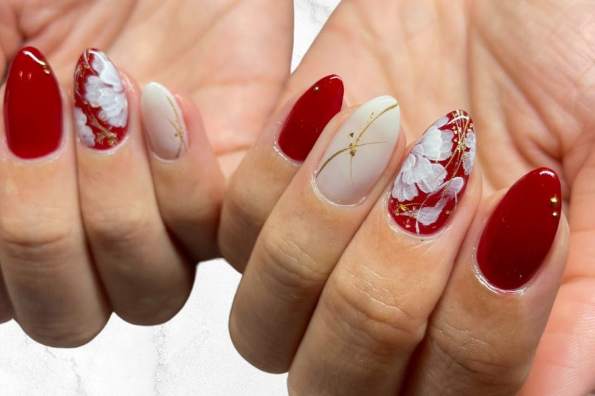
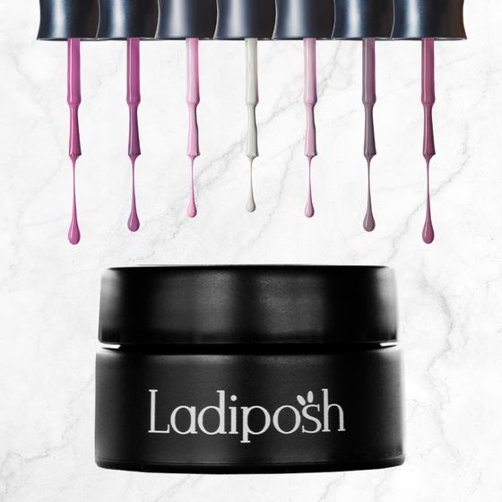
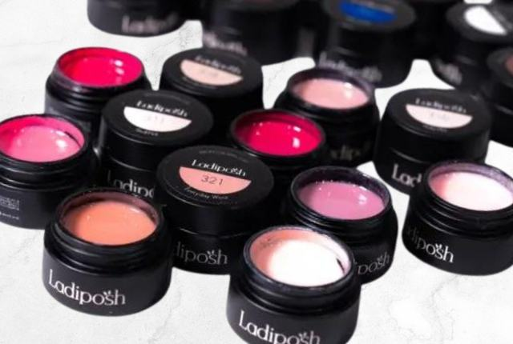

Level 7, George Street, Sydney
Look closer.
Our Japanese nail technicians are renowned for their meticulous attention to detail, ensuring that each nail design is executed with precision.

Move the lens over the nails to see the detail.
Welcome to
Nails by Miho
Here, every treatment is more than a procedure; it’s a bespoke journey tailored to your personal style and preferences. From the latest trends in nail art to the enduring charm of classic designs, our services are designed to enchant and inspire. Utilising only the finest materials and innovative techniques, we ensure your nails are not just beautified, but also nurtured to their optimal health.
Indulge in a luxurious experience where meticulous care, comfort, and high-end style converge. Explore our range of services and let us transform your nails into a masterpiece of elegance. Welcome to your new haven of nail perfection.
Our services
Every service, with its time and price.
Removals: if you are replacing a full set with colour or a custom design, the removal is 50% off.
Our nail technicians implement innovative techniques that Japanese nail artistry brings, including the use of unique materials (like holographic films, 3D designs, and intricate hand-painted art), as well as advanced gel nail techniques.
Our use of high-quality, long-lasting materials are gentle on the nails. This includes premium gel polishes and unique embellishments that are often sourced directly from Japan.
If you are looking for the ability to fully customise your nail designs or are seeking personalised art that reflects your individual style and preference, we are here for you.


Our Japanese nail system of choice
Ladiposh
Ladiposh presents an exquisite soft gel nail system originating from Japan, renowned for its breathable, enduring composition. It stands as our esteemed recommendation to our clientele.
Esteemed for its versatility, Ladiposh enables an infinite array of designs and nail art, prioritising the health of the nail above all.
Remarkably safe and effortless to remove, this system negates the necessity for UV exposure, ensuring a premier and health-conscious nail care experience.
About us
“Oh my god, her nails are stunning! I wonder where she gets them done.”
Have you ever walked past someone and thought that to yourself? If so, you are in luck, you have found us!
Prior to moving to Australia, Miho spent the previous 5 years competing in Japan’s most prestigious nail competition. Consistently ranking amongst Japan’s highest skilled nail technicians, this is the quality and expertise she offers in her salon located in Sydney’s CBD.
Miho offers precision and attention to detail, innovative techniques, high-quality materials, customisation and personalisation, trend awareness, health and safety, and a luxurious pampering experience.
Work
Hand-painted, one nail at a time.
Book now
Tell us what you would like, and when.
Send a message and we’ll get back to you shortly.
- Address
- Level 7, Suite 15/424-428 George Street, Sydney NSW 2000
Open in Google Maps - Phone
- 0420 835 055
- Opening hours